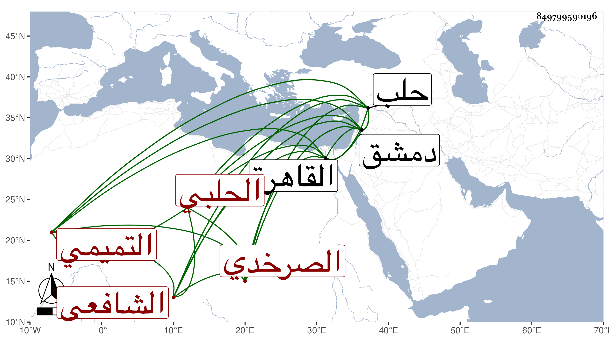

0902Sakhawi.DawLamic.ITO20230111-ara1.EIS1600.849799590196
Biography ID: 849799590196
63
علي بن محمد بن يحيى العلاء أبو الحسن التميمي الصرخدي ثم الحلبي الشافعي . تفقه بدمشق والقاهرة وأخبر أنه سمع المزي بدمشق وقدم حلب فسكنها وناب في القضاء عن الشهاب بن أبي الرضى وغيره ، وكان عالما مستحضرا فاضلا في الفقه وأصوله نظارا ذكيا بحيث كان يبحث مع الشهاب الأذرعي بنفس عال وأثنى البلقيني عند قدومه حلب على علمه وفضيلته ومع ذلك فكان يتورع عن الفتيا ولا يكتب إلا نادرا مع ملازمة بيته وعدم التردد إلى أحد غالبا وكان يحضر المدارس مع الفقراء فلما بنى تغرى بردى النائب جامعه فوض إليه تدريس الشافعية به فحضره ودرس فيه بحضور الواقف يوم الجمعة بعد الصلاة ، وممن أخذ عنه ابن خطيب الناصرية وترجمه بما هذا ملخصه وقال أنه انتفع به كثيرا . ومات في الفتنة التمرية سنة ثلاث ، وتبعه شيخنا في أنبائه وقال أنه تفقه وهو صغير وسمع من المزي وغيره وجالس الأذرعي وكان يبحث معه ولا يرجع إليه رحمه الله وإيانا .
